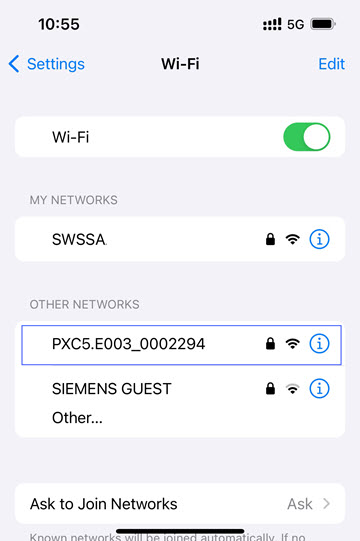
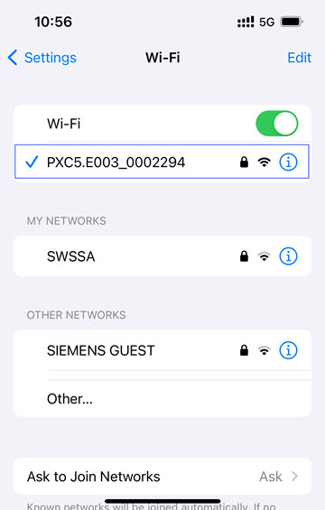
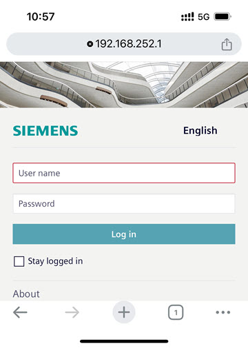
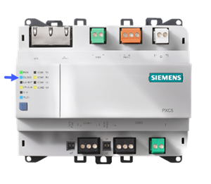
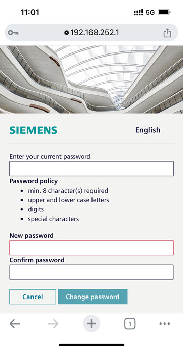
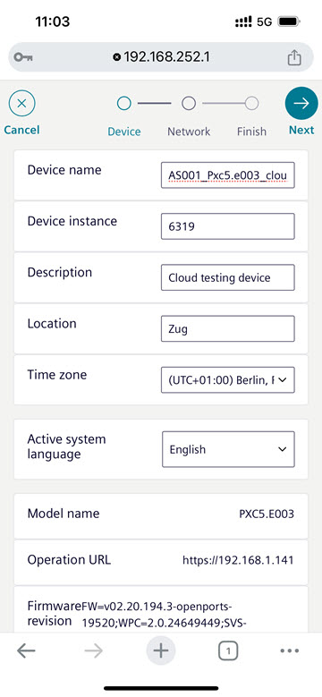
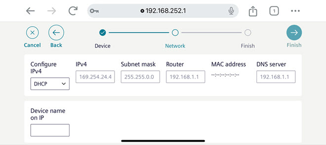
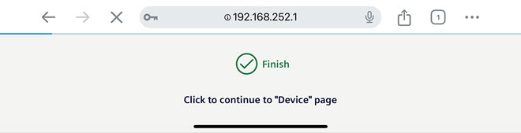
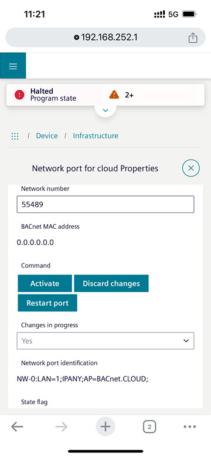

本地手动配置设备

根据所使用的设备，对话框的显示方式可能有所不同。对于移动设备，建议以横向模式工作。
Connecting to the device
- The ABT Site project password is known and fulfill the password policy of:
- min. 8 characters
- upper and lower case letters
- digits
- special characters
User profiles > Common settings
- Push the SVC button on the PXC for 2 seconds to activate the WLAN.
Functionality of the PXC device - The blue LED is blinking.
- The device appears in the OTHER NETWORKS section.

- Select the device network to establish the connection to the device.

- Search and connect to the PXC’s WLAN network with your PC/tablet/smartphone (SSID will be the “hardware name_xxx”, for example, PXC5.E003_0002294).
- Password to network is the serial number printed on the PXC (S/N: xxxxxxx).
- The blue LED lights up constantly.
- Open a web browser and enter 192.168.252.1
- Non-secure connection information is displayed.
- By confirming the information display, the password dialog opens.

LED 状态属于设备类型：
- PXC4.Exxx, PXC5.Exxx, PXC7.Exxx
- PXG3.W100-2, PXG3.W200-2
 | ||
LED device state | Connection | Check |
离开 | 云已关闭 | 云设置 |
闪烁 | 云未连接 | 互联网连接 |
IP settings | ||
以太网套接字 LEDs | ||
On | 云连接 | OK |
- WLAN 的 LED 必须亮起，然后您才能使用浏览器访问设备。
- 云激活时，云的 LED 会亮起。
Change the initial device password
- The ABT Site project password is known and fulfill the password policy of:
- min. 8 characters
- upper and lower case letters
- digits
- special characters
User profiles > Common settings
- In the User name field, enter Administrator.
- In the Password field, enter the default password OneBT used in all devices.
- Select Log in.
- The password section opens
- In the Enter your current password field, enter the default password OneBT used in all devices.
- In the New password field, enter the ABT Site project password.
- In the Confirm password field, enter the ABT Site project password again.
- Select Change password.
- The device password is changed to the ABT Site project password.

Entering the device settings
- The Device dialog is open.
- In the Device name field, enter the device name.
- Copy the information to the Excel table for the data exchange with Siemens.
- In the Device instance field, enter the device instance ID.
- Copy the information to the Excel table for the data exchange with Siemens.
- In the Description field, enter the device description.
- In the Location field, enter the location of the project.
- From the Serial number field, copy the information to the Excel table for the data exchange with Siemens.
- Select Next.

Entering the network settings
- The Network dialog is open.
- In the Configure IPv4 drop-down list, select Manual.
- In the Device name on IP drop-down list, select the device name.
- In the IPv4 field, enter the IP address for this device.
- Copy the information to the Excel table for the data exchange with Siemens.
- Select Finish.

- Select .
- The configuration is finished.

Activating the Cloud settings
- Select the Object view tab.
- Select Device > Infrastructure.
- Select Network port for Cloud.
- In the Enable connectivity drop-down list, select Yes.
- Select .
- In the Enable BACnet tunnel drop-down list, select Yes.
- Select .
- From the Activation key field, copy the information to the Excel table for the data exchange with Siemens.
- Select Activate.

- In the Network port for Cloud row, the status changes to
Connected.